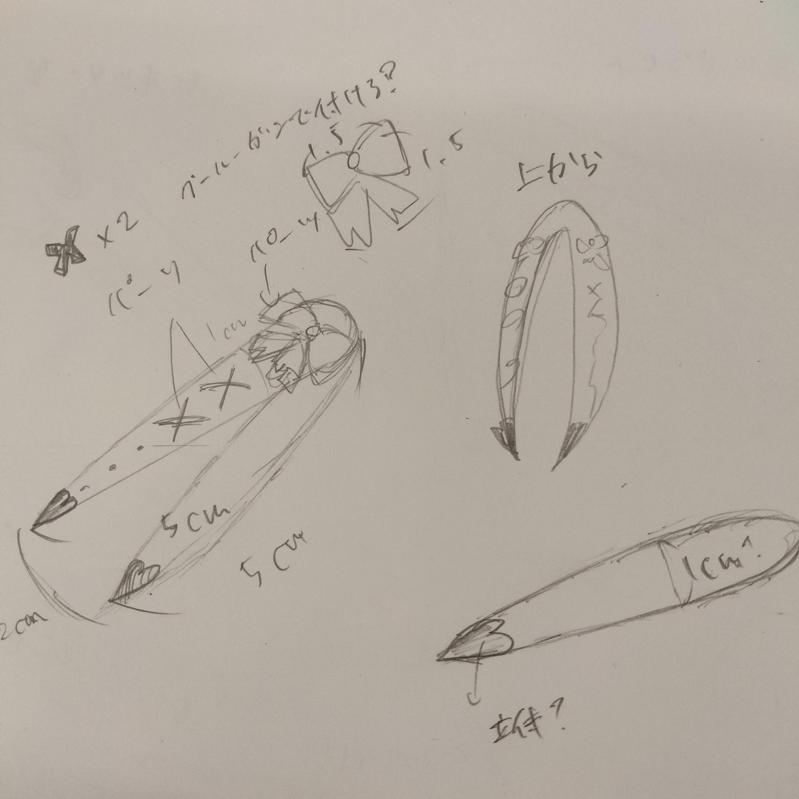
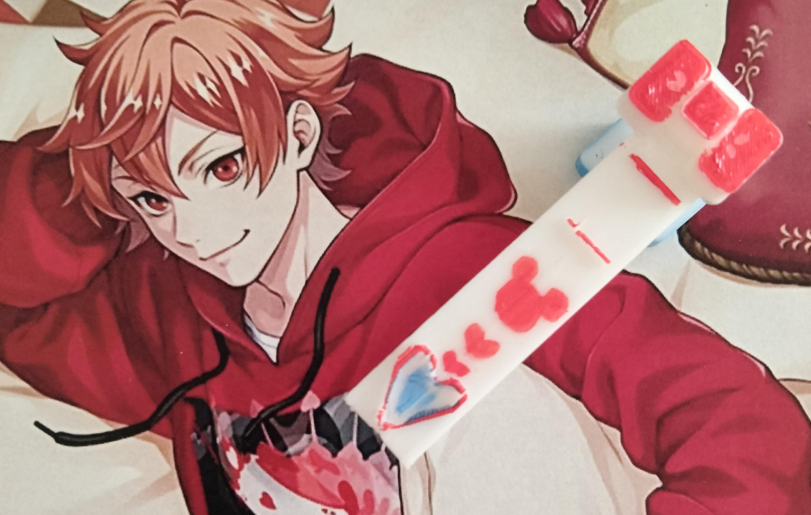

作品名：オタピンセット
スケッチ・デザイン
かわいいを詰め込んだデザインにしようとおもいました。
作成した作品


完成品のSTLファイルはこちら
STLファイル
作品の説明
作品のメインテーマは「推しと量産型」
ピンセットの中に推しの文字を入れ、量産型のメインであるリボンをくっつけました。
この作品を作ろうとしたきっかけ
グッズの交換の梱包の時や、カードをかわいくデコレーションするときピンセットはよく使います。
その時にピンセットも一緒に推し色でかわいくできたら最高だなと思って作りました。
制作過程
実はこの完成品は四回目でやっと成功しました。左から一回目、二回目、三回目に作った作品です。
一回目のやつは見ての通りリボンが小さすぎました。二回目はリボンは成功しましたが、文字を入れるのを忘れました。
三回目は文字を入れるのに成功しましたが、エースのスの斜めがうまくできなくてガタガタになってしまいました。
そして四回目できれいにできました。まず、リボンの真ん中を少し出すだけで立体感がうまれリボンぽくなった
また、スケッチ機能を使うことで斜めの線も作れると分かったため、このようなハートも作ることができました。
ハートはピンセット内のサイズなのでそのままピンセットにくっつけて、リボンはピンセットを超える大きさなので別々にプリントしたらうまくいきました。